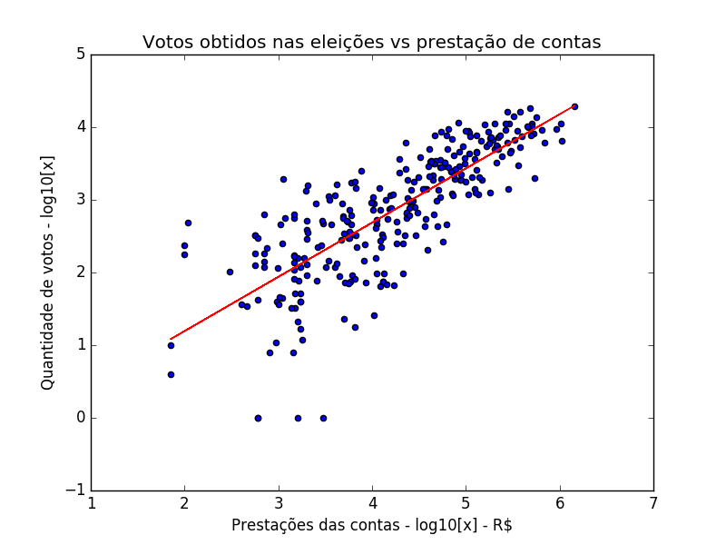

pyROOT
Configurações gerais
Gráficos
Ajustes e resíduos
Resultados do ajuste
[0]
[1]
[2]
chi²
graus de liberdade
0.1512(5)
0.1512(5)
0.1512(5)
141.51
10

Residuos
Matriz de covariancia e correlação
×
Configurações gerais
Some text in the modal.
×
Gráficos
Some text in the modal.
×
Ajuste e residuos
Some text in the modal.